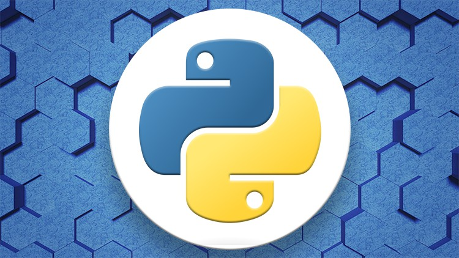
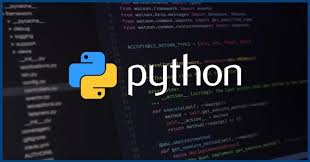

Python dasturlash tilini yaratilishi 1980-yil oxiri 1990-yil boshlaridan boshlangan. O`sha paytlarda uncha taniqli bo`lmagan Gollandiyaning CWI instituti xodimi Gvido van Rossum ABC tilini yaratilish proektida ishtirok etgan edi. ABC tili Basic tili o`rniga talabalarga asosiy dasturlash konsepsiyalarini o`rgatish uchun mo`ljallangan til edi. Bir kun Gvido bu ishlardan charchadi va 2 hafta davomida o`zining Macintoshida boshqa oddiy tilning interpretatorini yozdi, bunda u albatta ABC tilining ba’zi bir g`oyalarini o`zlashtirdi. Shuningdek, Python 1980-1990-yillarda keng foydalanilgan Algol-68, C, C++, Modul3 ABC, SmallTalk tillarining ko`plab xususiyatlarini o`ziga olgandi. Gvido van Rossum bu tilni internet orqali tarqata boshladi. Bu paytda o`zining “Dasturlash tillarining qiyosiy taqrizi” veb sahifasi bilan internetda to 1996-yilgacha Stiv Mayevskiy ismli kishi taniqli edi. U ham Macintoshni yoqtirardi va bu narsa uni Gvido bilan yaqinlashtirdi. O`sha paytlarda Gvido BBC ning “Monti Paytonning havo sirki” komediyasining muxlisi edi va o`zi yaratgan tilni Monti Payton nomiga Python deb atadi (ilon nomiga emas).


Bir qancha vaqt o`tib Gvido Gollandiyadan Amerikaga ko`chib o`tdi. Uni CNRI korparatsiyasiga ishlashga taklif etishdi. U o`sha yerda ishladi va korparatsiya shug`ullanayotgan proektlarni Python tilida yozdi va bo`sh ish vaqtlarida tilni interpretatorini rivojlantirib bordi. Bu 1990-yil Python 1.5.2 versiyasi paydo bo`lguncha davom etdi. Gvidoning asosiy vaqti korparatsiyani proektlarini yaratishga ketardi bu esa unga yoqmasdi. Chunki uning Python dasturlash tilini rivojlantirishga vaqti qolmayotgandi. Shunda u o`ziga tilni rivojlantirishga imkoniyat yaratib bera oladigan homiy izladi va uni o`sha paytlarda endi tashkil etilgan BeOpen firmasi qo`llab quvvatladi. U CNRI dan ketdi, lekin shartnomaga binoan u Python 1.6 versiyasini chiqarib berishga majbur edi. BeOpen da esa u Python 2.0 versiyani chiqardi. 2.0 versiyasi bu oldinga qo`yilgan katta qadamlardan edi. Bu versiyada eng asosiysi til va interpretatorni rivojlanish jarayoni ochiq ravishda bo`ldi.